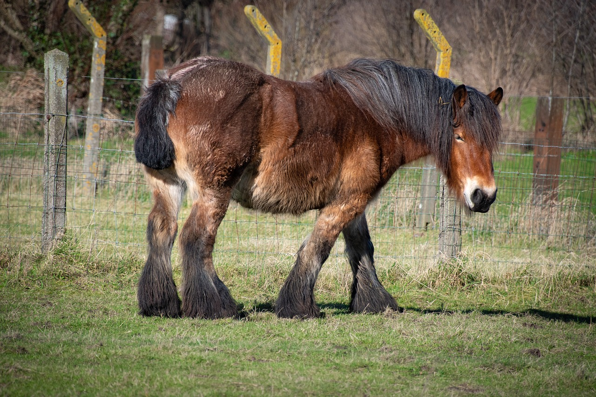
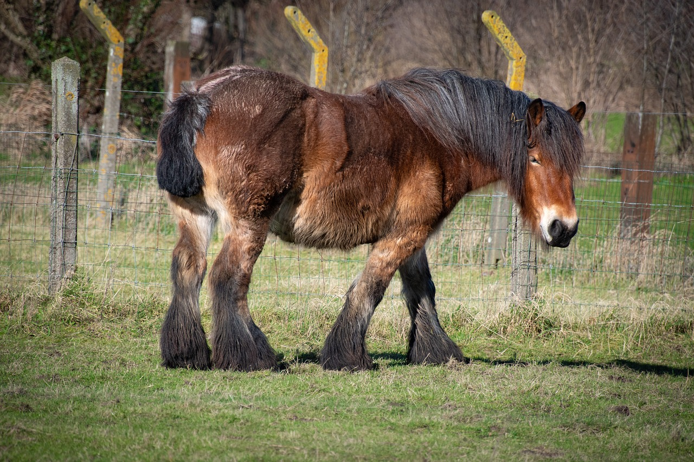
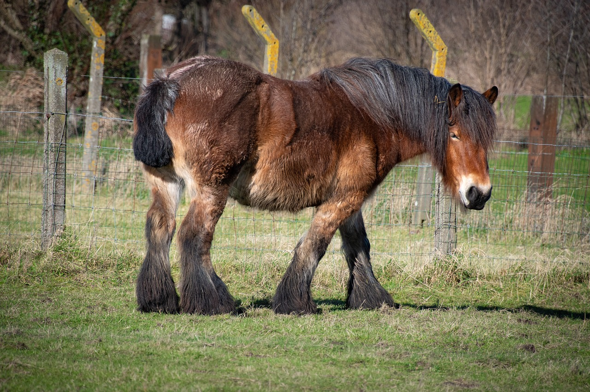

Machine learning is a field of Artifical Intelligence that allows computers to learn from data without being explicitly programmed. By feeding the computer data, the computer learns to identify patterns and make predictions or decision based on that data.
For our model we chose to teach a machine to classify objects into three categories: horse, fish, or bird.
We selected images from the Smithsonian Libraries and Archives online database, the Public Domain Image Archives, and the online site titled Pixabay. Each category was trained with 13 to 22 images which ranged from drawings to paintings to photographs. We kept our sample of images relatively small in order to use images of horses, birds, and fish that we would be familiar with. You can view all of the image we used to train the model at the link below.
Here are some examples we used:

Training the machine was relativley simple after following the machine learning materials provided in our course. After uploading the images to our machine and cateogrizing them as horses, fish, or birds, we tested our machine. The machine works by utilizing a webcamera, and holding an image in front of it. We used our mobile phones to display an image for the webcamera to capture. Once caputered, the machine categorized the image.
As we started to work on this project, we were finishing up our reading of Unmasking AI: My Mission to Protect What is Human in a World of Machines by Dr. Joy Buolamwini. We started to intertwine the themes brought up by Buolamwini into our work of teaching a machine. We thought through our process of choosing a data set, specifically reflecting on the fact that the images were chosen based on what we believed were most representative of each category. A full body image of a horse from the side might be read better by the machine than a straight-on image of the face. A trout looks most like a classic fish to me, and a starling must be a more accurate representation of a bird than an ostrich or penguin. All assumptions we brought to the machine – a machine which did not know anything other than what we told it.
As a group, we held the sole power to determine what qualified as a fish, a bird, or a horse just as anyone holds the power when labeling datasets for machine learning. Buolamwini shared her experience labeling the dataset she called the “Pilot Parliaments Benchmark,” saying she started to feel unsettled by the labeling. She was working toward using this dataset to examine AI systems for bias and called out the fact that “if [her] dataset selection and the labels were heavily skewed (like the datasets that came before) or poorly labeled, [her] experimental setup might be insufficient to surface any indications of bias even if they were present,” (Buolamwini, p 105). We wonder if there is a way to norm a dataset free of bias from the labeler in order to fully assess bias of the program. As we learned from ABC Australia’s film, AI vs. Human: The Creativity Experiment, even something as simple as the prompt a generative AI tool is given can have a drastic impact on the outcome. AI knows what we tell it, what we ask it, and what we teach it. The power we held in this experience is but a fraction of the power held by others with the ability to label data for more important sets of information. The misidentification of a fish, horse, or bird may not have dire consequences, but starting our journey in this field with the recognition of the power we hold has lasting ramifications for our future, more consequential works.
As we tested our model by holding images of birds, horses, and fish to the webcam, we saw the machine identify photos with a range of results. We held up an image of a horse and saw a true positive identification with the horse metric rising to near 100%. Holding up images of a single fish or a single bird revealed similar results in their respective categories. But how about when we held up a set of images, an unrelated image, or an image similar to a horse, bird, or fish? The model was still required to classify these images into one of the three categories that we had trained. We had created a world for our model in which only three categories exist and, therefore, only three labels could be used. Companies responded to similar issues when Buolamwini released the findings of her “Gender Shades” research. She noticed that while some companies, like Google, stopped using gendered terms altogether in their facial recognition software, “other companies started using less definitive descriptions of their work and opted for ‘perceived gender’ instead of ‘gender’ in describing the kind of labels their systems produced,” (Buolamwini, p 203). This begs the question: if labels are less definitive, does that mean they are more accurate and possibly less biased?
In our model, we chose to provide only three categories into which our machine can classify images, and the labels are definitive. Images can only be classified as a horse, bird, or fish. However, this is not necessarily a fault of the machine but a fault in the bias of the programmer. As the programmers, we did not give the machine additional options of classification. Currently when an image of a deer is held up to our machine, it classifies it incorrectly as a horse. We could either only show our machine images of horses, fish, and birds so it appears to be 100% accurate, or we could design our machine to have categories such as “Similar to a Horse” so when we hold up a picture of a deer that classification also appears to still be accurate. In this way, we would technically be accounting for a margin of error in the identifications. However, as we see it, accounting for this margin of error could have dire consequences depending on the type of machine that is being programmed.
If we train a model on white faces and then continue to only show it white faces, it will appear to be accurate. Instead of making our labels less definitive, limiting the datasets, and making a system appear accurate, “we need AI practitioners, when seeing a lack of representation in datasets, to use their position to document the issues and make sure the limitations of a system or research findings are published alongside the hopeful possibilities,” (Buolamwini, p 203). The views of what technology could do are so vast while the actual execution only encompasses a small number of people. Ellen Pao writes about the inequalities of algorithmic representation in Tech, Heal Thyself citing the incredible amount of white male dominated startup founders turning around to hire more white men in a self-fulfilling prophecy. This cycle prepetuates innovation where “even the positive benefits cannot make up for the harms [it causes],” (Pao, p 34). Even when diversity efforts are attempted, they often fall flat in these tech companies. Erica Joy explains the rise of “colorless diversity” wherein white women in computing may be celebrated in a futile effort to encourage diversity all while leaving behind other marginalized groups and ignoring the impact of intersectionality (Joy).
Those in power are comfortable where they are. Martin Luther King Jr. so aptly stated that “freedom is never voluntarily given by the oppressor; it must be demanded by the oppressed,” and now more than ever this statement rings true. The threat of machines becoming powerful enough to pose a threat to humans is a salient idea. However, that idea may only truly scare those in power. Powerful humans already make decisions that impact marginalized communities mirroring what privileged communities fear about the possibility of AI. Buolamwini wonders as we think about AI overtaking humans, “if the threat is really that more people are going to be harmed or if those with power now fear becoming marginalized by advanced technology,” (Buolamwini, p 149). Our fish, horse, and bird model is a far cry from the impactful recognition systems that are being implemented by companies and governments throughout the world. However, as Buolamwini says on the topic of tech justice, “if you have a face, you have a place in the conversation and the decisions that impact your daily life – decisions that are increasingly being shaped by advancing technology that sits under the umbrella of artificial intelligence,” (Buolamwini, p 280).